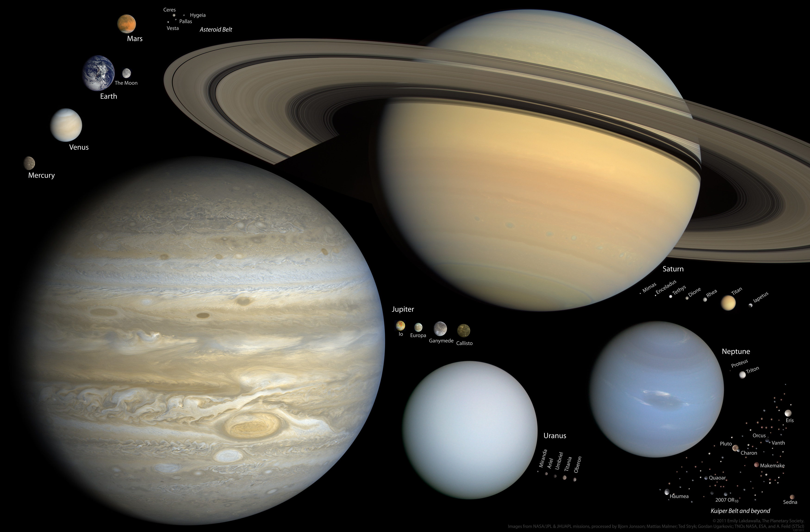
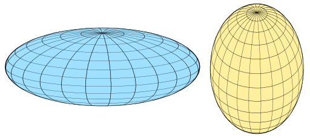
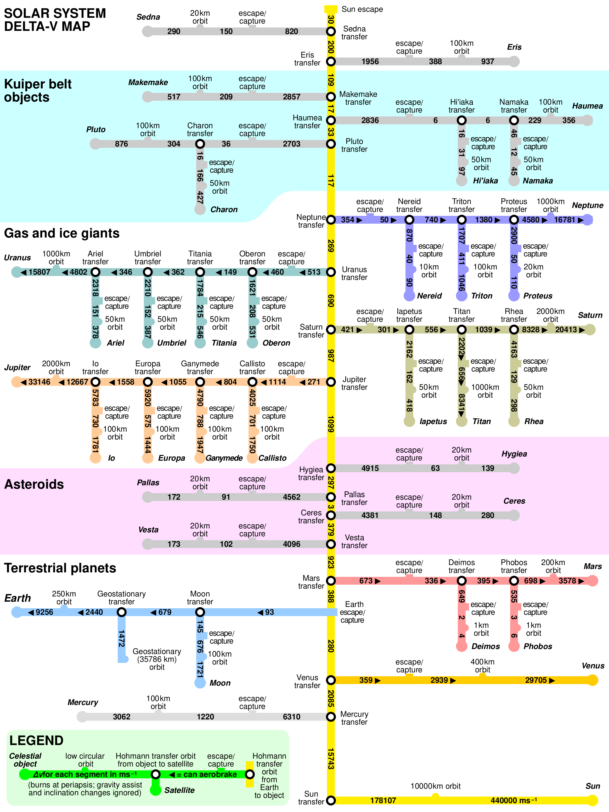

Planetary Science
Orbital mechanics
Orbital parameters
- Orbital period
- Inclination
- Eccentricity
Simulators
Heliocentric orbital simulator: https://ssd.jpl.nasa.gov/tools/orbit_diagram.html
Specific simulator for Saturn: https://gravitysimulator.org/solar-system/saturn-and-its-rings-and-major-moons
Rotation parameters
- Rotation period
- Axial tilt
Celestial coordinates
- Ascension
- Declination
Gravitational resonance
Trojan satellites
Planetary features
Spectrum
Albedo
Peaks of eternal light
https://en.wikipedia.org/wiki/Peak_of_eternal_light
Permanently shadowed craters
https://en.wikipedia.org/wiki/Permanently_shadowed_crater
Planetary Topography
Spheroid

Oblate and prolate spheroids. Source.
A spheroid, also known as an ellipsoid of revolution or rotational ellipsoid, is the surface obtained by rotating an ellipse about one of its principal axes; in other words, an ellipsoid with two equal semi-diameters. A spheroid has circular symmetry.
If the ellipse is rotated about its major axis, the result is a prolate spheroid, elongated like a rugby ball.
If the ellipse is rotated about its minor axis, the result is an oblate spheroid, flattened like a lentil or a plain M&M.
If the generating ellipse is a circle, the result is a sphere.
Due to the combined effects of gravity and rotation, planets are not quite in the shape of a sphere, but instead is slightly flattened in the direction of their axis of rotation.
Quadrangles
TDB
Distance of the horizon
Distance to the true horizon from an observer close to the planet's surface is about \(d \simeq \sqrt{2 h R}\)where h is height above sea level and R is the radius. For instance:
-
On Earth, in standard atmospheric conditions, for an observer with eye level above sea level by 1.70 metres, the horizon is at a distance of about 5 km.
-
On Mars, where R = 3300km, for the same observer the horizon would be at \(d \simeq \sqrt{2*1.7m*3300000m} \simeq 3.5\)km
-
On Europa, where R = 1561km, for the same observer the horizon would be at \(d \simeq \sqrt{2*1.7m*1561000m} \simeq 2.3\)km
Calculator
Insert the height of the observer and the radius of the planet to obtain the horizon distance, calculated with the formula above.
Radius: km
Distance of the horizon: km
Planetary Geology
Cold trap
https://en.wikipedia.org/wiki/Cold_trap_(astronomy)
Solar System
Delta-v requirements for main Solar System bodies

Coordinates system
Ecliptic coordinate system
This spherical coordinate system is uses to specify the position of various orbiting bodies with respect to the Sun [1].
Such coordinate system can also be centered on a specific planet to define the orbits of its moons or satellites, as it's sometimes done with the Earth.
The name of the coordinates are:
-
If heliocentric (centered on the Sun):
- longitude: l
- latitude: b
- distance: r
-
If geocentric (centered on the Earth or another planet with orbiting satellites):
- longitude: λ (lowercase lamda)
- latitudine: β (lowercase beta)
- distanza: Δ (uppercase delta)
References
[1] "Ecliptic_coordinate_system" https://en.wikipedia.org/wiki/Ecliptic_coordinate_system.